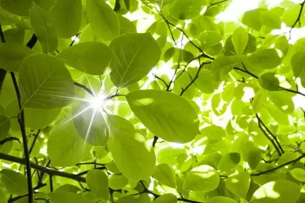

Chlorophyll is a green pigment found in plants, algae, and some bacteria, serving as the primary agent for photosynthesis. It absorbs light energy, enabling organisms to convert carbon dioxide and water into glucose and oxygen. Chlorophyll a is the dominant pigment in most plants, giving them their vibrant green color. Its chemical formula is C₅₅H₇₂N₄O₅Mg, and the porphyrin ring, which contains a central magnesium atom, plays a crucial role in light absorption. Chlorophyll a primarily absorbs light in the blue-violet and red regions of the spectrum, converting light energy directly into chemical energy for glucose production.
Chlorophyll b, a yellow-green pigment, complements chlorophyll a with a chemical formula of C₅₅H₇₂N₄O₅Mg. It absorbs light mainly in the blue and red-orange wavelengths, expanding the range of light usable for photosynthesis and transferring energy to chlorophyll a. Chlorophyll c, which appears olive green, is found in specific algae and has unique side chains that enhance its absorption characteristics. It efficiently captures light in blue-green wavelengths, allowing certain algae to perform photosynthesis effectively in marine environments.
Chlorophyll d, with its reddish hue, absorbs light in the far-red region. Found in some cyanobacteria, it enables these organisms to thrive in low-light environments by capturing wavelengths that other chlorophyll types cannot. The chemical properties of each type of chlorophyll are pivotal to their function, as each has a unique absorption spectrum that allows plants to maximize light-harvesting efficiency in different environments.
Chlorophyll a absorbs primarily in the blue-violet and red regions, while chlorophyll b captures light in the blue and red-orange ranges. This diversity enhances photosynthetic efficiency under varying light conditions. The presence of magnesium in the porphyrin ring is essential for chlorophyll stability, as it facilitates energy transfer during photosynthesis. However, excessive light exposure can generate reactive oxygen species, which may damage cellular components. Chlorophyll helps mitigate this risk by dissipating excess energy as heat, protecting plants from photodamage.
The diversity of chlorophyll types reflects the adaptability of photosynthetic organisms to their environments. In aquatic ecosystems, chlorophyll c and d allow specific algae and cyanobacteria to utilize wavelengths that penetrate deeper into the water column, enabling them to thrive in low-light conditions. These pigments are vital to the productivity of aquatic ecosystems, supporting a diverse array of marine life.
In terrestrial environments, the interplay between chlorophyll a and b enables plants to optimize light absorption, even in shaded areas. Higher ratios of chlorophyll b may help plants succeed in understory habitats, where competition for light is intense. Additionally, the ratio of chlorophyll types can change with the seasons, allowing other pigments to become visible as chlorophyll a breaks down in autumn, resulting in the vibrant colors of fall foliage.
Chlorophyll is not merely a green pigment; it is a complex component of the photosynthetic machinery that allows plants and algae to capture and utilize light energy efficiently. The various types of chlorophyll, each with its unique color and chemical properties, are essential for the survival and adaptation of photosynthetic organisms in diverse environments. Understanding these differences deepens our knowledge of plant biology and highlights the intricate relationships between organisms and their ecosystems, enriching our understanding of the fundamental processes that sustain life on Earth.
